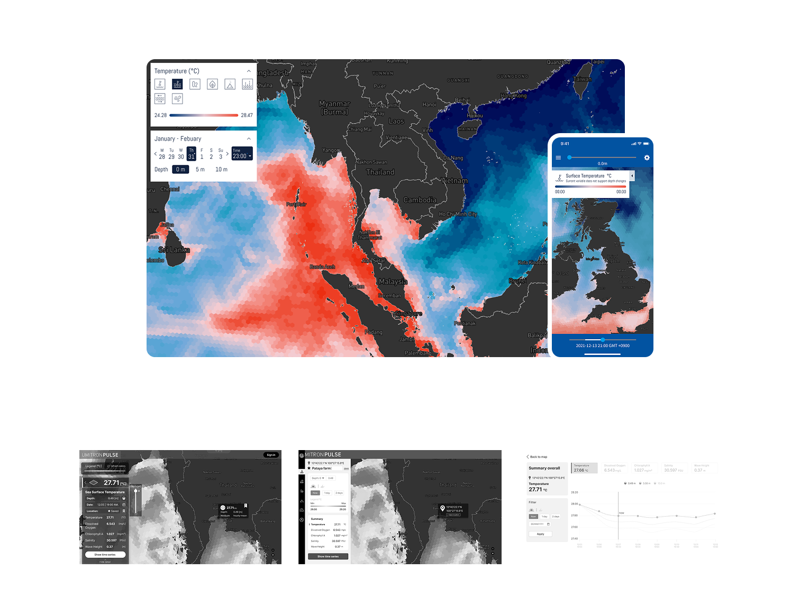
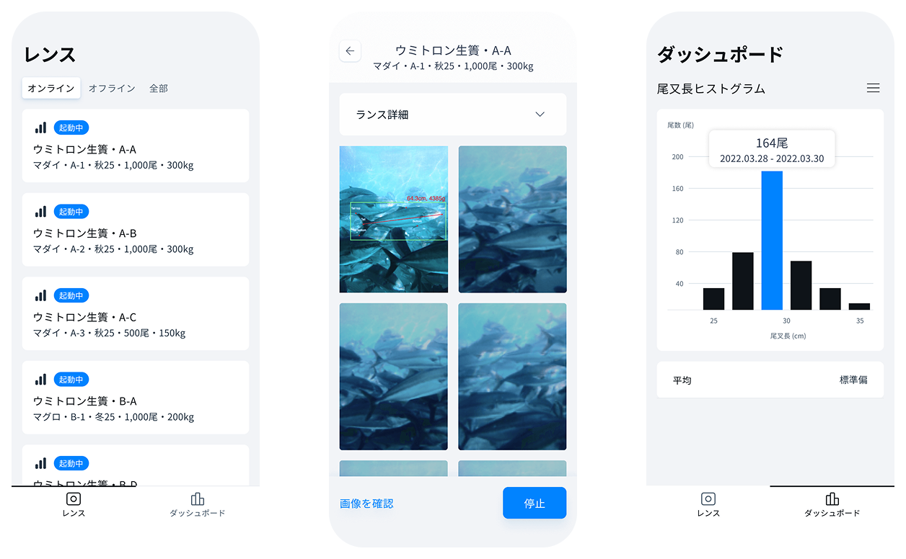
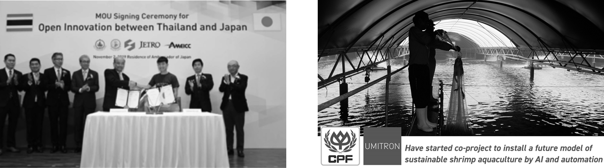
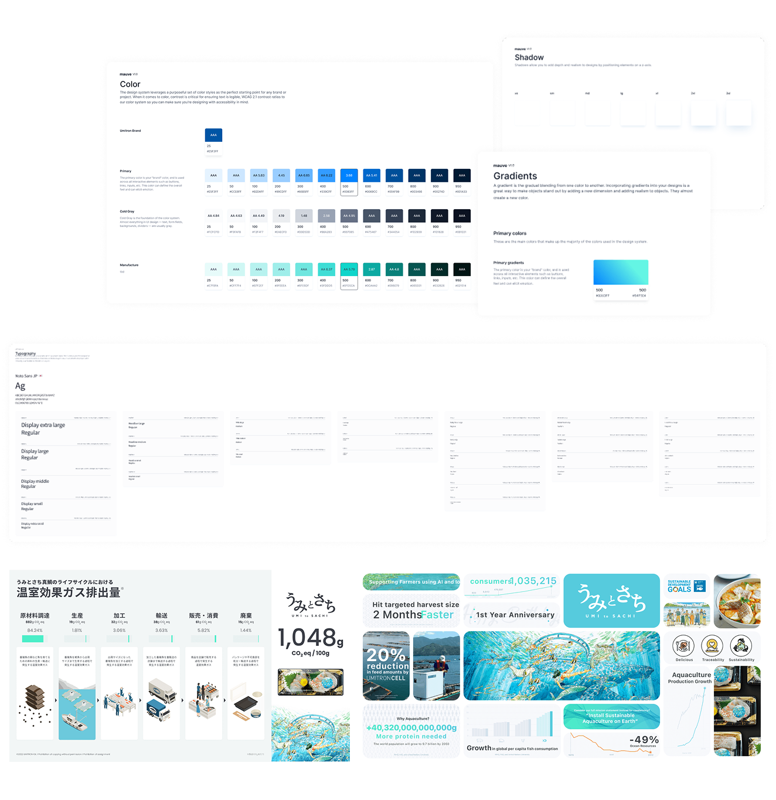

UMITRON
Seven products. One designer. One ocean.
The situation
UMITRON was a government-funded startup with a beautiful mission: use technology to make aquaculture sustainable. They had three co-founders — one of them the CTO, an engineer who built the first products himself. Good intentions, strong technology, no designer.
By the time I arrived, six products were already live. IoT feeders, satellite ocean dashboards, farm management tools, fish measurement systems — all built by engineers solving real problems for real farmers. But each product had been designed in isolation. Interfaces felt disconnected. Complex data overwhelmed users who spent their days on boats, not behind screens. The technology was advanced. The experience was not.
I was hired on contract to improve one product — PULSE, the satellite ocean data app. Within weeks, I was working on all of them.
The insight
The oyster farm rewrote everything I knew
I traveled to Beppu in Iwate prefecture to visit an oyster farm. Standing on the boat, watching farmers work, I discovered something no design textbook teaches: sunlight reflecting off water makes screens nearly unreadable. Farmers work with wet hands, in constant motion, in harsh conditions. Every tap target I'd ever designed was too small. Every contrast ratio was too low.
This wasn't a usability optimization. It was a fundamental reframe. These products couldn't be designed like daily apps — they needed to be crafted for a world where the ocean is your office.
Seven products needed one foundation — with room to breathe
Each product served different users in different contexts: a marketplace for purchasing supplies, an IoT dashboard for automated feeding, a satellite app for ocean monitoring, a mobile tool for measuring fish underwater. A rigid universal design system would have broken immediately.
I built a shared foundation — color, typography, spacing, border styles — that kept everything recognizably UMITRON. But above that foundation, each product had its own component library, free to solve its specific problems. Consistency at the brand level. Freedom at the product level.
The best technology means nothing if farmers can't use it
UMITRON's AI could optimize feeding, predict ocean conditions, and measure fish without human intervention. But farmers — many of whom relied on traditional methods and worked in low-connectivity environments — found the interfaces intimidating. Data was raw, navigation was complex, and critical alerts were easy to miss.
My job was to be the bridge. Translate the engineers' intelligence into interfaces that a farmer in a boat could use without thinking twice.
The work
UMITRON MAUVE — E-Commerce Marketplace
MAUVE was my blank canvas — UMITRON's first e-commerce platform, designed to bring farmers into the ecosystem by offering a seamless way to purchase aquaculture equipment, feed, and technology. I built it closely with the CTO from concept to launch.
Farmers had no habit of buying supplies online. I designed the full experience — branding, information architecture, product discovery system, and checkout flow. The filter and recommendation system made it easy to find relevant products in a vast catalog. The checkout was streamlined for mobile, where most farmers would access it.
- 0 → 1 Product
- E-Commerce
- -21.7% Cart Abandonment
- +33.4% Discovery
UMITRON PULSE — Satellite Ocean Data App
PULSE was my first project at UMITRON — a web and mobile app providing real-time ocean data: wave height, water temperature, oxygen levels, salinity. The raw data was there. Farmers couldn't make sense of it.
I redesigned the data visualization layer — custom graphs, charts, and maps that made ocean parameters accessible and actionable. I integrated a real-time alert system so farmers would know immediately when conditions turned critical. Mobile-first, because farmers aren't sitting at desks.
- Data Visualization
- Real-time Alerts
- +31.7% Response Time
- +23.8% DAU

LIVE
UMITRON CELL — Smart Automated Feeder App
CELL controls UMITRON's IoT fish feeders — the product farmers interact with most. I redesigned the entire application from the ground up. Modern layout, simplified data visualization, and clearer interaction patterns. The field trip to Beppu directly shaped this redesign — larger touch targets, higher contrast, simplified navigation for use in bright outdoor conditions.
- IoT Dashboard
- Field Research
- +42.8% Usability
UMITRON REMORA — AI Feeding Optimization
REMORA integrates AI-based feeding optimization, pellet detection, and mortality estimation into large-scale operations using existing cameras — no new hardware required. I redesigned the onboarding to work seamlessly with existing camera setups and created an AI-driven dashboard that provided clear, actionable feeding recommendations.
- AI Dashboard
- Camera Integration
- -22.1% Feed Waste
UMITRON FARM — Farm Management Platform
FARM tracks feed volume, mortality, fish health metrics, and enables note-taking across entire aquaculture operations. I redesigned the workflow to be task-focused rather than data-focused, and created a dynamic reporting feature that cut report generation time in half. I conducted workshops directly with farmers to ensure the design matched their actual daily routines.
- Farmer Workshops
- -58% Report Time
- +80% Feature Adoption
UMITRON LENS — Fish Measurement System
A portable stereo camera paired with a mobile app to measure fish size underwater automatically. I built a mobile-optimized dashboard and redesigned the measurement flow to be simpler and more accurate, with real-time data feedback and visual tracking features.
- Stereo Camera
- Mobile Dashboard
- +71.6% Accuracy

UMITRON EAGLE — AI Shrimp Analytics
Partnered with CP — one of Thailand's largest agribusiness companies — to develop an AI-powered shrimp measurement system. Farmers traditionally picked up and measured shrimp by hand with a ruler, up to 8 times a day. The new system uses cameras to automatically find the largest and smallest shrimp, calculates averages, and reports in real-time. My Thai background made this collaboration smooth — same language, same cultural context.
- CP Foods Partnership
- AI Measurement
- +46.6% Accuracy

Design handoff
To ensure a smooth and efficient handoff to engineers, I followed a structured approach that minimized ambiguity and facilitated accurate implementation of the design.
Clear Documentation & Design Specs
Provided detailed UI specifications, including spacing, typography, colors, interaction states, and accessibility guidelines using Figma, Zeplin, or Storybook.
Interactive Prototypes
Created high-fidelity prototypes to demonstrate key flows, micro-interactions, and expected behaviors, reducing guesswork and enhancing developer understanding.
Component-Based Design System
Worked closely with engineers to align UI components with existing design systems, ensuring consistency and reusability in development.
Regular Design-Dev Syncs
Scheduled weekly check-ins to address any blockers, clarify design intent, and refine UI interactions in collaboration with engineers.
Edge Case Considerations
Anticipated various user scenarios and provided fallback designs for cases like errors, loading states, and empty screens to ensure a seamless user experience.

"When the technology disappears and all that's left is a farmer caring for their ocean — that's when I know the design is right."
The impact
| Product | Key Metric | Impact |
|---|---|---|
| CELL | Usability across key tasks | +42.8% |
| PULSE | Response time to critical conditions | +31.7% |
| PULSE | Daily active users | +23.8% |
| MAUVE | Cart abandonment | -21.7% |
| MAUVE | Product discovery | +33.4% |
| FARM | Report compilation time | -58% |
| FARM | Feature adoption | +80% |
| REMORA | Feed waste | -22.1% |
| LENS | Task completion accuracy | +71.6% |
| EAGLE | Task completion accuracy | +46.6% |
| Ecosystem | Feed waste reduction | -22.6% |
The lesson
Design in the field, not the studio. Standing on an oyster farm in Beppu taught me more about interface design than any usability lab. Sunlight glare, wet hands, limited connectivity — these constraints don't show up in personas. They show up when you stand where your users stand.
Simplicity beats complexity, especially for non-tech-savvy users. Farmers didn't need more data — they needed the right data, presented so clearly that it required zero interpretation. Every screen I designed had to pass the test: can a farmer on a boat understand this in three seconds?
A design system is how one person scales. Seven products, one designer. Without the two-tier system — shared foundation, product-level freedom — this would have been impossible. The system wasn't documentation. It was survival.
Sustainability and business aren't opposites. Reducing feed waste by 22% wasn't just an environmental win — it saved farmers money and improved UMITRON's value proposition. The best design outcomes serve multiple stakeholders simultaneously.